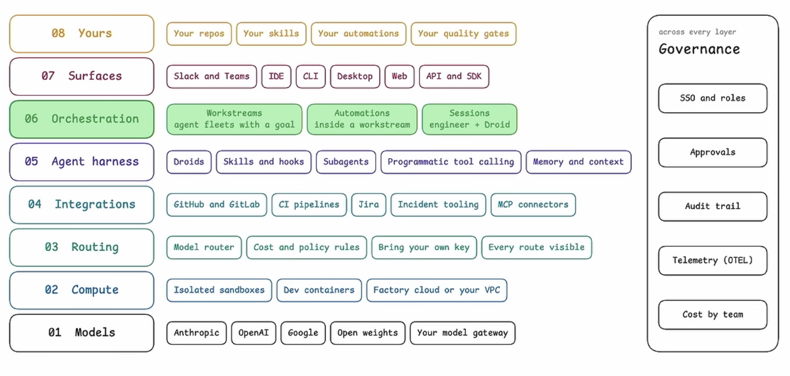

Continuous Integration Continuous Deployment (CI/CD_as_Security)
While the technicality of cyber security continues to expand with agents chaining attack vectors, I believe the foundation from where we reduce tangible risk to businesses remains the same. In the Accept Voodoo Deny Negligence post, I wrote how news cycles went from fear-mongering the advanced hacking capabilities of frontier models to the largest crypto hack in history occurring by way of social engineering.
The security fundamentals of "Defense in Depth" don't change, but the complexity (re: depth) of our environments continue to change. The graph below is taken from an AI Engineer Code Summit talk titled 12 Rules for a Software Factory That Doesn't Ship Slop. Notice how the Governance column wraps the entire stack. We have the tools "to do the grc thing", the risk comes from agent workflows that push dependencies, features, or infrastructure we don't understand or don't know about.

However a department is run (Standups, Agile Project Mangagement, etc.) the meetings become more about being a Human in the Loop (HITL) to ensure key infrastructure, strategies, standards are adhered to across the "factory stack".